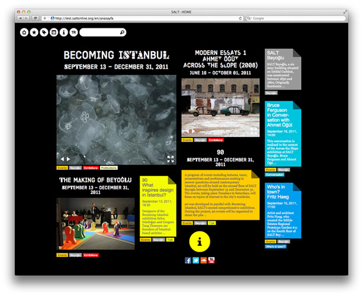

Main
- 

SALT website
September 2011
SALT is an experimental art, design, and research institution based in Istanbul. Following the design of SALT's identity in early 2011, Project Projects began work on a radically flexible website for the institution, which extends the identity's principles of change and open-endedness to an interactive platform. Comprised of two basic elements — tags and pages — the site is organized without a fixed hierarchy, allowing administrators to fluidly shift focus and featured content as the institution grows. Multilingual, color-coded tags may be starred to drive site menus and primary navigation, while pages are built with a modular system for different layouts and media types that maintains the ability for seamless future expansion. The site's headlines use SALT's institutional typeface Kraliçe, which is modified by a different invited designer every four months. Each page on the site displays the typeface version that was in use at the moment of the page's creation, creating an archive and visual time stamp of SALT's ongoing transformation.
Keywords
Architecture, Art, Collaboration, Community, Curating, Custom typography, Design, Environmental, Identity, Multilingual, Print, Research, Temporality, Variable identity,
Website